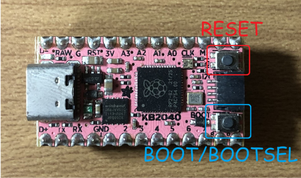
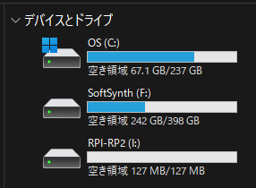
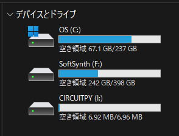
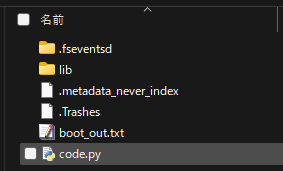

CircuitPythonを使ってRP2040マイコンボードを動かします。とりあえず、手元にあるKB2040で説明します。
CircuitPythonとは
CircuitPythonはMicroPythonの派生版で、低価格マイクロコントローラでの実験と教育を簡素化するために設計されています。CircuitPythonをインストールしたマイコンボードは、PC上からは CIRCUITPY という名前のUSBドライブとして認識され、その中にあるファイルをコピーして編集するだけでコードを実装できます。
CircuitPythonを使えるようにするための手順
CircuitPython環境のインストール
まず、CircuitPythonのUF2ファイルとライブラリファイル群を入手します。UF2ファイルはマイコンボード毎に用意されているので、使用するマイコンボードのUF2ファイルを手に入れて下さい。ライブラリバンドルは、UF2ファイルのバージョンに対応するものをダウンロードします。
マイコンボードにCircuitPythonをインストールするために、ブートローダーを立ち上げます。KB2040の場合は、BOOT/BOOTSELボタンを押したままRESETボタンを押します。PC上に RPI-RP2 というドライブが現れるまでBOOT/BOOTSELボタンは押し続けて下さい。

RPI-RP2 という新しいディスクドライブが表示されます。その中に先ほどダウンロードしたUF2ファイルをドラッグ&ドロップでコピーします。

そうすると、RPI-RP2 ドライブが消え、CIRCUITPY という新しいディスクドライブが現れます。これでCircuitPythonのインストール完了です。CIRCUITPY ドライブ直下の code.py ファイルを編集・保存することで、マイコンのコードを書き換えることができます。


Mu Editorのインストール
code.py は CIRCUITPY 上で直接編集することもできますが、最初はシリアルコンソールが内蔵されたMu Editorを使用する方が良いです。Mu EditorはPythonで書かれたシンプルなコードエディタで、Windows、Mac OS、Linux、Raspberry Piで動作します。内臓されたシリアルコンソールでボードのシリアル出力からすぐにフィードバックが得られます。
Mu Editorのインストーラを https://codewith.mu からダウンロードします。DownloadページにはInstructionsへのリンクもあるので、適宜確認しながら進めて下さい。
Mu Editorの初回起動時に、“モード”の選択画面が表示されます。今はCircuitPythonを選択して下さい。現在のモードは、ウィンドウの右下の歯車アイコンの隣に表示されます。モードが “Microbit”などと表示されている場合は、左上のモードボタンをクリックし、表示されるダイアログボックスで”CircuitPython”を選択して下さい。

CircuitPythonをインストールしたマイコンボードがCIRCUITPYドライブとして接続されていない場合、Mu Editorはボードを接続するまで編集したコードをどこに保存するかを通知してきます。この警告を避けるには、Mu Editorを起動する前にボードを接続し、CIRCUITPYドライブがマウントされていることを確認して下さい。
CircuitPythonコードの編集
CircuitPythonのドキュメント
CircuitPythonの書き方については、以下を参照してください。
Mu Editorでの編集
Mu Editorの画面は、メニューバー、テキストエディタ、REPLウィンドウ、プロッターウィンドウで構成されています。メニューバーのシリアルアイコンをクリックすると、REPLウィンドウが現れます。EnterキーでREPLモードになり、Ctrl-Dでボードをリセットします。シリアル通信がある場合には、REPLウィンドウに表示されます。プロッターボタンをクリックすると、プロッターが現れます。シリアル通信で数値を受け取ると、プロットしてくれます。テキストエディタでコードを編集し、保存することでマイコンボードがコードをリロードして動き出します。

テキストエディタでの編集
ちょっとした変更であれば、CIRUITPY ドライブ直下の code.py ファイルをメモ帳などのテキストエディタで開いて編集できます。code.py ファイルを保存すると、マイコンボードがコードをリロードして動き出します。
ライブラリの使用
ライブラリを使用することで、マイコンボードの多彩な機能を少ない記述で実現できます。最初にダウンロードしたバンドルの中から使用するライブラリをコピーして、CIRCUITPY ドライブの lib フォルダ内に保存することで使えるようになります。ライブラリの詳細は、以下を参照してください。
マイコンボードの各端子の名称確認
マイコンボードの入出力端子を使用する場合、あらかじめ決められた端子の名前（D1とかA1とか）を使うと分かりやすいです。（たぶん）マイコンボード毎のUF2ファイルで決められているので、それを確認する必要が出てきます。UF2ファイルの中身を確認するのは大変なので、CircuitPythonのセットアップが上手くいっているかの確認も兼ねて、端子の名前を確認する以下のコードを動かしてみます。
# CircuitPython Essentials Pin Map Script
import microcontroller
import board
board_pins = []
for pin in dir(microcontroller.pin):
if isinstance(getattr(microcontroller.pin, pin), microcontroller.Pin):
pins = []
for alias in dir(board):
if getattr(board, alias) is getattr(microcontroller.pin, pin):
pins.append("board.{}".format(alias))
if len(pins) > 0:
board_pins.append(" ".join(pins))
for pins in sorted(board_pins):
print(pins)以上のコードをcode.pyに記述して保存するとマイコン上でコードが実行され、マイコンから送られてきた端子名称がREPLウィンドウに表示されます。同じ行に並べて表示された名前は、同じ端子に対してどちらの名前も使えることを意味します。各マイコンボードのPinoutと照らし合わせて確認してみて下さい。